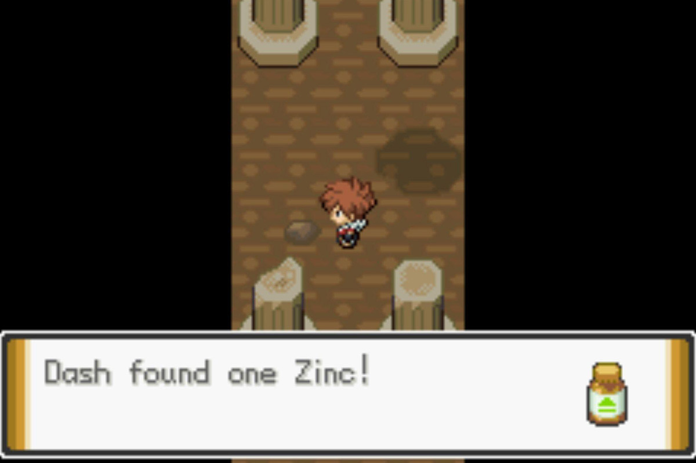

Quick Guide:
- Enter the Ruins of Void
- Defeat the Guardian of the Ruins
- Survive the Portal Challenge
- Observe the Ritual
- Escape Cube Space
Getting to the Ruins of Void
At this point in the walkthrough you’re in the Dehara City Game Corner and you’ve just found Jax.
He wants to go outside to talk to you about your next move and how to get to the Ruins of Void.
He mentions needing to get the Dehara Gym Badge so you can use Surf – but before you can discuss it further, Hoopa appears and summons a portal that whisks you both away!
Ruins of Void (Exterior)
{kind=link}
| Points of Interest | |
|---|---|
 |
Arrival Point |
 |
Shadow Grunt |
| Exits and Passages | |
|---|---|
| Cliff Cave | |
| Requires HM Surf | |
 |
Ruins B3F |
| Requires HM Rock Climb | |
| Ruins B2F First Chamber | |
 |
Ruins B2F Second Chamber |
 |
Ruins B1F First Chamber |
| Ruins B1F Second Chamber | |
 |
Ruins B1F Second Chamber Elevator |
 |
Ruins 1F Main Structure |
Items
| Items | |
|---|---|
| Zygarde Cell | |
Wild Pokémon
| Wild Pokémon | |
|---|---|
| Interior (B1F-B3F) | |
|
Baltoy Ground/Psychic |
|
|
Yamask Ghost |
 |
|
Cofagrigus Ghost |
 |
|
Duskull Ghost |
 |
|
Dusclops Rock |
 |
|
Bronzong Steel/Psychic |
 |
|
Sableye Dark/Ghost |
 |
|
Sigilyph Psychic/Flying |
|
|
Lunatone Rock/Psychic |
 |
|
Solrock Rock/Psychic |
 |
| Surfing | |
|
Tentacool Water/Poison |
 |
|
Tentacruel Water/Poison |
 |
|
Pelipper Water/Flying |
 |
|
Mantine Water/Flying |
 |
|
Golduck Water |
 |
| Underwater | |
|
Clamperl Water/ |
 |
|
Mareanie Poison/Water |
 |
|
Toxapex Poison/Water |
 |
|
Chinchou Water/Electric |
 |
|
Lanturn Water/Electric |
 |
|
Luvdisc Water |
 |
|
Relicanth Water/Rock |
 |
| Fishing | |
|
Magikarp Water (Old Rod) |
 |
|
Horsea Water (Good Rod) |
 |
|
Shellder Water (Good Rod) |
 |
|
Seadra Water (Super Rod) |
 |
|
Kingdra Water/Dragon (Super Rod) |
 |
|
Shellder Water (Super Rod) |
|
|
Gyarados Water/Flying (Super Rod) |
 |
| Rock Smash | |
|
Geodude Rock/Ground |
 |
|
Baltoy Ground/Psychic |
|
It looks like Hoopa has taken you to the Ruins of Void prematurely.
The Shadow Grunts immediately spot you, and in a desperate attempt to stop you, blow up the side of the mountain. That destroys the staircase and hurts Jax’ Staraptor.
Jax decides to wait outside while you go and find his Staraptor and put an end to the Shadow while you’re at it – he can heal you whenever your team is low on health.
Go inside the cave opening and you’ll find yourself in some catacombs.
Ruins of Void – B3F
{kind=link}
| Points of Interest | |
|---|---|
 |
Abra to Dehara Town |
 |
Ancient Tablet |
 |
Blocked Dead End A |
 |
Blocked Dead End B |
| Exits and Gates | |
|---|---|
| Cliff Cave | |
 |
Ruins Exterior |
 |
First Switch and Gate |
 |
Second Switch and Gate |
| Third Switch and Gate | |
 |
Ruins B2F First Chamber |
Items
| Items | |
|---|---|
| Zygarde Cell | |
|
Dusk Ball (hidden) |
|
| Max Repel |  |
| TM31 Brick Break | |
At the beginning of this floor is an Abra who will take you back to Dehara City if you’re missing anything.
Maze Solution
There are three passages ahead of you – first, take the one on the right.
There’s an Ancient Tablet at the end of this passage that gives you a hint – “SWITCH BELOW THEN AVOIDING THE DUSCLOPS IS THE KEY”.
There are a bunch of Dusclops in the central passage, so it’s best not to go that way.
Go back, pass the Abra, and head down the left passage.
Follow the left passage all the way around until you find an ancient lever.
Pull it, and there’ll be no more Dusclops problem.
Now walk down the central passage and you’ll see that the Dusclops have been blocked in, but the way forward is also protected by another gate.
Go east and follow that passage, ignoring any forks.
You’ll eventually find the second switch – pull it and the gate will open.
Continue north past the gates and follow the only remaining passage to the third and final switch.
Once you pull it, you’ll be free to go through the left passage.
Walk through the left passage and you’ll eventually see a ladder to the next floor.

When you arrive on the next floor you’ll immediately be thrown into a tough fight, so make sure your Pokémon are all healed up first.
Ruins of Void – Higher Interior
{kind=link}
| Points of Interest | |
|---|---|
 |
Slide Puzzle |
 |
Portal Challenge |
 |
Go-Goggles House |
| Exits and Passages | |
|---|---|
| Ruins B3F | |
| Ruins B2F Exterior | |
|
Ruins B2F Exterior |
 |
Ladder to Ruins B1F First Chamber |
|
Ruins B1F Exterior |
| Ruins B1F Exterior | |
|
Ruins B1F Exterior Elevator |
|
Ruins 1F Exterior |
|
Ladder to Ruins B1F Final Chamber |
 |
Ladder to Ruins 1F Main Chamber |
Items
| Items | |
|---|---|
|
Full Heal (hidden) |
|
| Dusk Stone | |
Ruins of Void – B2F
You are confronted by a Claydol and challenged to prove yourself in battle.
This boss battle, like the others in the Ruins of Void, is level scaled even on Vanilla difficulty.
This means Claydol will be around a couple levels below you no matter how overleveled you may be.

Once it’s been defeated, it will smash its way through the west wall of the chamber, revealing an exit.
Going through it will put you on the outside of the ruins.
Walk around the path until you see another opening.

Head inside and you’ll be in the second B2F chamber.
There is a set of double doors leading north, but they’re currently sealed.
Hoopa Puzzle
You will have to interact with the tile puzzle in the middle of the room to open them.
You can drag and drop the pieces wherever you like.
The final image should resemble Hoopa.
Once you’ve reassembled the Hoopa picture, the double doors will open.
There’s a ladder in the chamber beyond that will take you to the next floor.
Ruins of Void – B1F
Once you emerge, go west.
| Items | |
|---|---|
| Odd Incense | |
| Spell Tag | |
You’ll see another opening leading to the outside.
You’re nearly at the top of the pyramid-shaped ruins, it seems.
Continue along the ledge and you’ll pass another entrance.
However, your attention is drawn by something important – Jax’ injured Staraptor.
When you see it, Jax will follow you up the ruin and nurse it back to health. He will also reposition himself to be on this level, so you don’t have to go all the way back down to the bottom to heal.
This is important, because you will need to be healed for the next battle.
Portal Challenge
Head inside the next chamber, and Claydol is waiting for you.
To test you further, it opens a portal, and you’re challenged to defeat the three legendary Johto beasts one after another – with no break in between.
Since they’re level scaled, this is likely going to be a tough fight.
| Portal Challenge | |
|---|---|
|
Raikou Electric (level scales) |
|
|
Entei Fire (level scales) |
|
|
Suicune Water (level scales) |
|
The tile on which the Claydol sits is actually an elevator to the upper floor – once it leaves, you can use it.
Ruins of Void – 1F
Finally, you’re at the peak of the ruins.
The Grunts are shocked to see you, but they don’t actually confront you until you pass them.
| Items | |
|---|---|
|
Nugget (hidden) |
|
One of the Grunts battles you, and thankfully it isn’t level scaled.
After you beat him, the other one wants to fight, but Jax appears to distract them and you’re able to escape back into the ruins. Jax will also heal you here if you talk to him again.
| Grunt | |
|---|---|
|
Cofragrigus Electric (Lv.39) |
|
|
Sableye Dark/Ghost (Lv.38) |
|
Head inside and climb down the ladder into one more chamber.
Ruins of Void – Final Chamber
There’s not much here except a long hallway – walk through it and you’ll see another ladder to the level below.
| Items | |
|---|---|
|
Zinc (hidden) |
 |
As soon as you climb down the ladder, it’s not long before you’re captured by Shadow Grunts and dragged to the ritual site.
Ritual Challenge
Zeph, the leader of the Shadow, attempts to perform the ritual of unbinding, but he is unsuccessful.
The strange grunt with the red hair from before appears and reveals himself as Aklove, a descendant of the king that was at war with Borrius ages ago.
He performs the ritual and causes Hoopa to be Unbound, hoping for the destruction of Borrius.
To help bring that about, he orders Hoopa to open two portals and summon the legendary Johto birds to defeat you – one at a time, thankfully.
| Ritual Challenge | |
|---|---|
|
Ho-Oh Fire/Flying (level scales) |
|
|
Lugia Psychic/Flying (level scales) |
|
When you beat them, Aklove has another trick up his sleeve – he will do to you what he did to Marlon and seal you inside Cube Space!
You’re teleported away, and find yourself in a weird landscape.
Cube Space
Cube Space is an extremely strange environment, and it’s an absolute maze to try and navigate.
You’ll have to make your way through a bit of a teleporter maze, and it can be confusing, so pay attention to the following instructions:
Step 1: Walk east and hop on the next teleport pad.
Step 2: From there, walk north to the T-junction, take the west path and hop on the teleport pad.
Step 3: Walk north and then east. Do not take the teleport pad, go past it and turn north.
Step 4: You’ll come to three choices of teleport pad – take the right one.
Step 5: Go south – you will come to a pad, do not take it. Go past it to the second pad.
Step 6: Step on that second pad, do not go any further.
Once you step on that pad, you are whisked away to an area that has two other people in it – one of them is Marlon, and the other is your dad, Aros!
Aros explains he’s been trapped in Cube Space for years, and Marlon only recently joined him.
Together, all three of you work out a way for Marlon and you to escape – Aros will need to remain behind as he needs to be freed manually.
After an emotional goodbye, you’re teleported to Cinder Volcano.
Heading to Cinder Volcano
Cinder Volcano is where the Shadow Base entrance is, accessed through the cave entrance a Shadow Grunt was blocking the last time you were here.
Head inside to confront the Shadow.